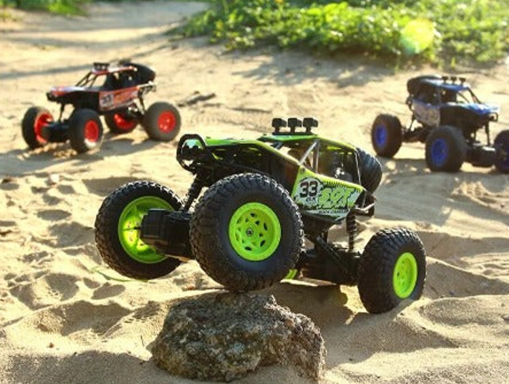

TERRENEITOR
The best gift
for your children
The best gift
for your children


CHARACTERISTICS
"Brushless RC Car" is an absolute beast. It features a high-torque motor, aluminum heat sink, and dual cooling fans. The separate receiver and 45A ESC make it customizable. With a 2S 7.4V 3000mAh battery and brushless motor, it reaches speeds of over 34 mph. Unleash the power and have fun!Driving Quality: Sponge tires and oil-filled shock absorbers reduce rolling at high speeds. It is equipped with four strong springs for challenging road conditions. Get ready for a comfortable and stable driving experience!
RESTRICTIONS
Control Range: The maximum distance within which the remote control can communicate with the vehicle. Restrictions in the range can limit the distance at which the Terreneitor can operate effectively.Terrain Type: While a vehicle like the Terreneitor may be designed to tackle various terrains, there may be restrictions regarding specific types of terrain in which it can operate optimally. For example, extremely rocky or muddy terrains could pose additional challenges.
CURIOSITIES
Record of Ascent to the Highest Mountain: Terreneitor set a world record by ascending to the summit of Mount Everest, the tallest mountain in the world, in a record time of just 3 hours and 27 minutes. Equipped with special tires and an enhanced traction system, Terreneitor demonstrated its ability to conquer extreme terrains.Intelligent Autopilot: A unique feature of Terreneitor is its intelligent autopilot system, which allows it to navigate autonomously through complex terrains while avoiding obstacles. This system utilizes advanced sensor technology and artificial intelligence algorithms to make quick and precise decisions, making Terreneitor the perfect companion for remote exploration expeditions.
First Expedition to the Moon: Surprisingly, a special version of Terreneitor was sent on a space mission to the Moon as part of a joint research project between international space agencies. Equipped with special tires designed for lunar low gravity and advanced communication systems, Terreneitor successfully conducted explorations on the lunar surface, opening new frontiers in space exploration and mobile robotics.